How to get buff
Part 1 of 5: Choose Goals
-
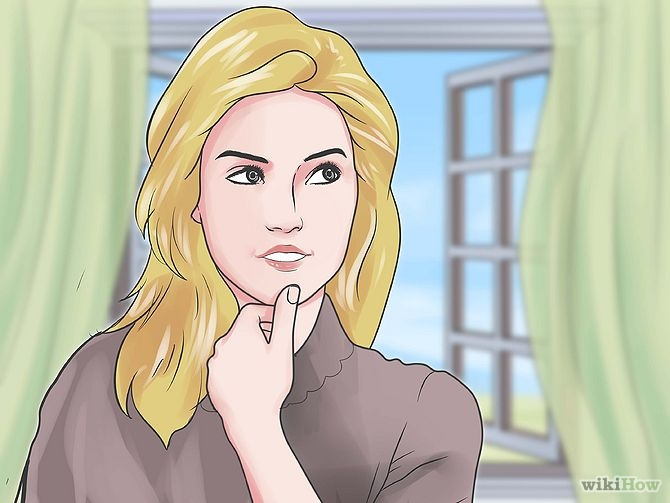
Decide the areas of your body that are the weakest. Getting buff requires you to build weak muscles to even out your physique. Sign up for a fitness test with a personal trainer at the gym, if you are unsure where you are weak. They can test your aerobic and strength and give you some areas to work on.
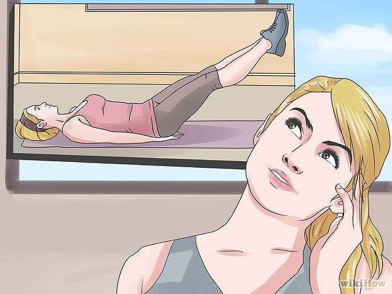
-
Set strength and aerobic goals. These will keep your workouts on track and allow you to hit milestones as you change your body's shape.For example, your cardio goal may be to run 2 miles (3.2 km) in 15 minutes. Interval training, using sprints and moderate exertion can help you reach your goal, by running 3 or 4 times per week.For example, your strength goals may be to do 10 push ups in 2 months.These goals will differ greatly between men and women for the most part. Men may want to build more muscle mass, while women may want to build lean muscle mass. The difference is in the execution of your Weightlifting.Include weight loss goals, if they apply to you. You can still get buff and gain muscle mass while losing weight. While Weightlifting speeds up your metabolism, you will need to spend an equal amount of time doing aerobic exercise to burn more fat off your body.
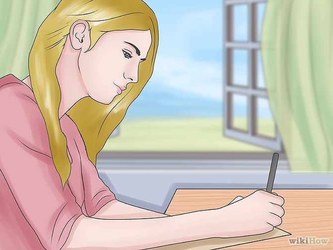
-
Write down your goals. Divide the goals up into 4 or 5 smaller touchstones, so that you can monitor your progress.
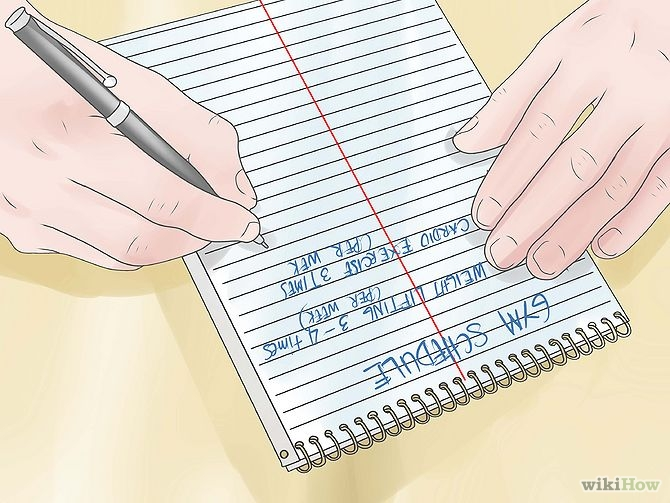
-
Create a gym schedule. Try to fit in Weightlifting 3 or 4 times per week with a day of rest in between, cardio at least 3 times per week for 30 minutes and body weight exercises 3 to 4 times per week. Add in stretching to cool down each day.Don't forget to take rest days. If you feel you are doing too much or you are exceptionally tired, take a day for your body to recover. Alternate Weightlifting and cardio days, during the majority of the week. Pay attention to your body so that it can rebuild stronger muscles while you rest.
Part 2 of 5: Body Weight Exercises
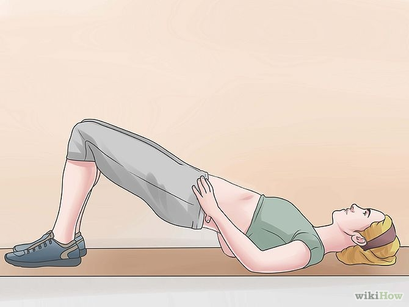
-
Learn how to do the basic body weight exercises that work more than 1 muscle group at once. These include squats, lunges, planks, side planks, calf raises, push ups and pull ups.
Take a barre, core burn, boot camp or TRX band class to learn how to do these exercises with proper form. You should be able to do them on your own, at home or at the gym, after a few classes.
Stop lifting weights if you are feeling the work in your lower back. Seek the help of a personal trainer so that you can get alternate exercises.
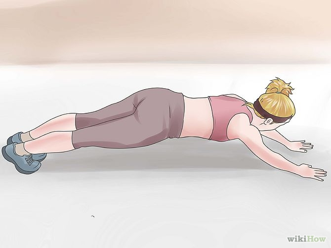
-
Do body weight exercises 3 to 4 times per week. You can mix in this training with either cardio or Weightlifting days.
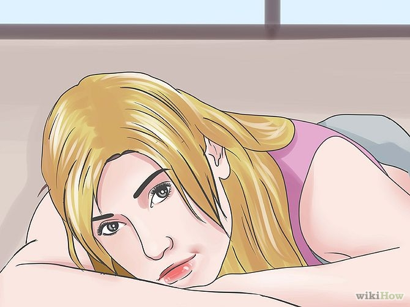
-
Do circuits of body weight exercise, giving yourself 30 seconds to rest between sets. Shorter rest times will improve the aerobic burn during this type of strength training.
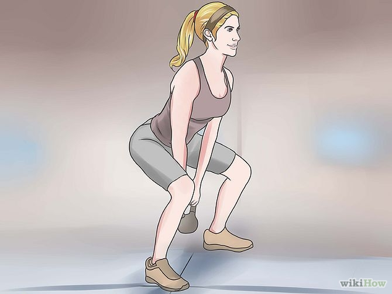
-
Do 2 to 3 sets of 10 to 15 reps. Do these repetitions slowly, pausing at the bottom or top of dynamic movements, so that you can activate different muscles.
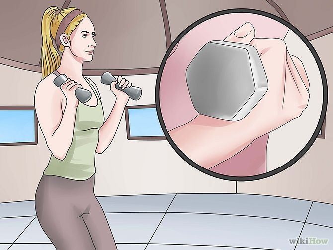
-
Increase the difficulty of the exercise, by going further or holding hand weights while you do the exercise. You should aim to increase difficulty every 2 to 3 weeks of consistent work.
Part 3 of 5: Weightlifting
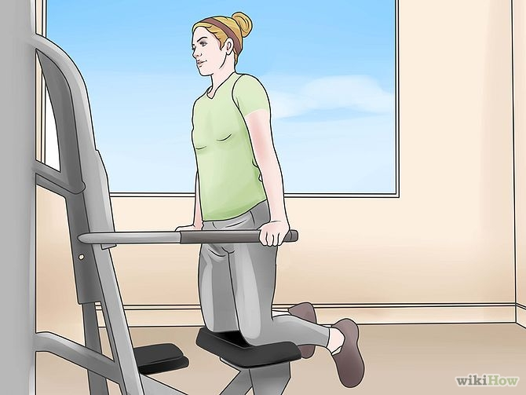
-
Start with weight machines. Learn proper form in this easy to use format first, if you have never lifted weights before.Choose an amount of weight that will allow you to do at least 2 sets of 10. People who are aiming to build leaner muscles, rather than muscle mass, may choose to use less weight and do 3 sets of 15 repetitions.
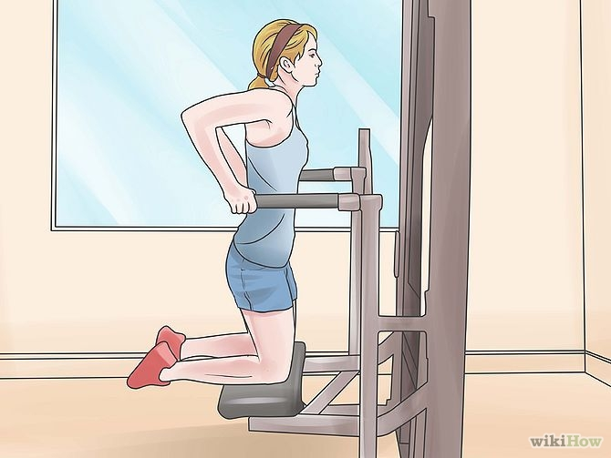
- Work short and long muscle fibers. After completing a set of repetitions with full range of motion, do a set of half range of motion more quickly. This will work the fast twitch muscles as well as the longer fibers.
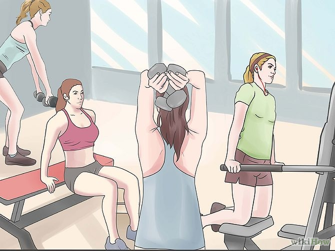
-
Target muscle groups on different days. For example, do arms and shoulders on Monday, legs and abs on Tuesday and chest and back on Wednesday. Never work the same areas 2 days in a row.
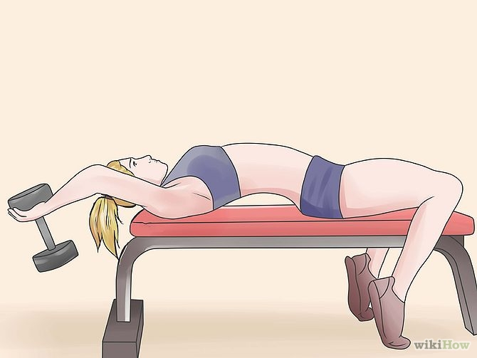
-
Work your target muscle groups to fatigue. You should reach muscle exhaustion in those groups when you stop lifting. You will build muscle quickly and get buff faster.
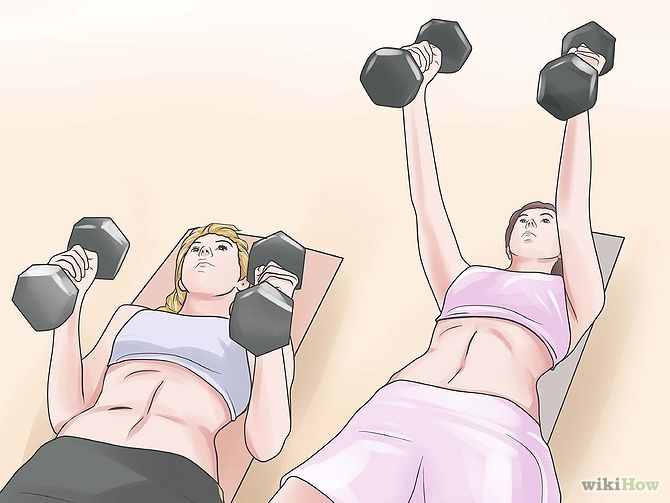
-
Work your target muscle groups to fatigue. You should reach muscle exhaustion in those groups when you stop lifting. You will build muscle quickly and get buff faster.
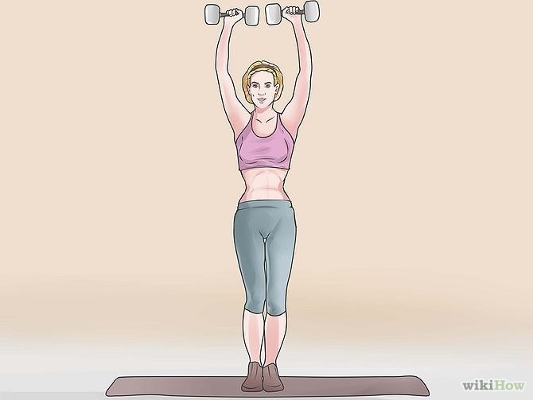
- Increase the weight you lift every 3 weeks. Increase in increments of 5 to 10 lbs. (2.2 to 4.5kg).
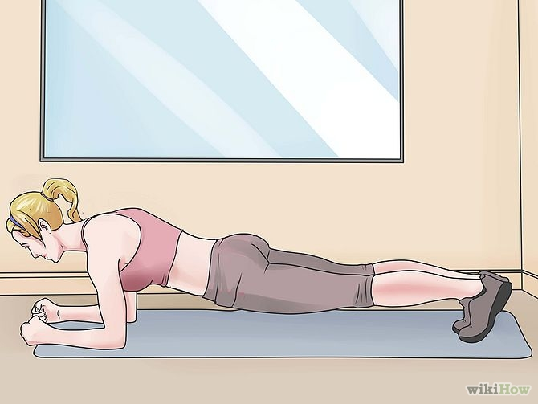
-
Start lifting free weights as soon you know how to do proper form. Make sure your body does not sway. Lifting weights without the help of machines can build muscle faster, and it can also be combined with work on weight machines.
Part 4 of 5: Cardio Routines
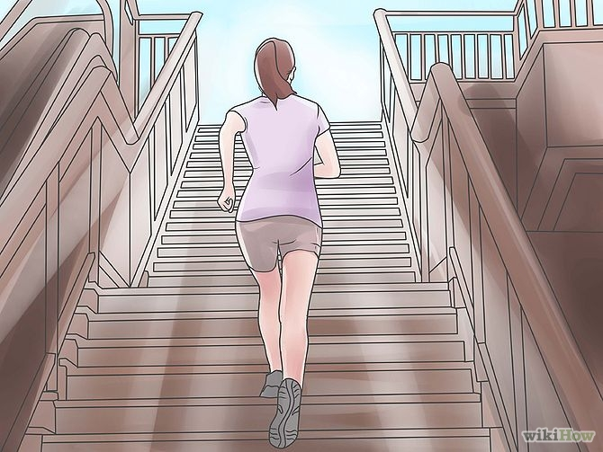
-
Add 20 to 30 minutes of cardio exercise 3 to 4 times per week. You will look buffer if you melt off some of the fat on your body. It is difficult to do this with strength training alone.
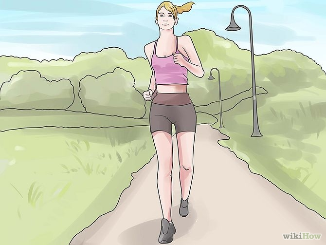
-
Try interval training. Do 1 to 2 minutes of sprinting, followed by 4 to 5 minutes of moderate intensity exercise. Intervals increase the efficiency of your metabolism, burning more fat.If you choose to do interval training, you will get the same or more benefit in a 20 or 30 minute period of exercise as you would doing 45 minutes to 1 hour of work at the same moderate intensity.
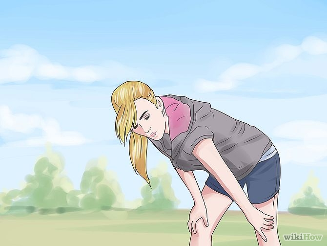
-
Try several cardio machines or sports. Do running, swimming, cycling, speed walking, elliptical and rowing, so that you work different muscles and avoid overtraining.
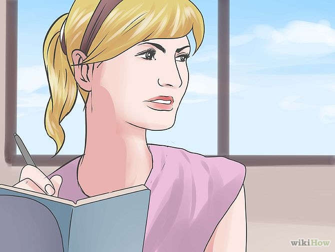
-
Have a cool down period and stretch after your aerobic exercise.
Part 5 of 5: Eat Right
- Create a meal plan that adds more protein into your diet. Protein is the building block of muscle, and you should increase your consumption immediately after you work out and in general.
Lean proteins that help build healthy muscle include non-fat Greek yogurt, fish, chicken, turkey, lean pork, lean beef, beans, eggs and milk.
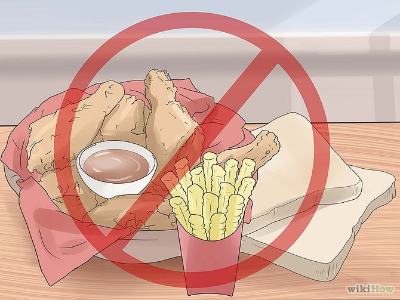
- Restrict your consumption of refined carbohydrates. As you build muscle and your metabolism increases, these will not fill you up for very long.
Choose complex carbohydrates like oats, quinoa, whole wheat bread, brown or wild rice and lentils.
- Eat more produce. You need the vitamins and minerals from fruits and vegetables to remain healthy. Seek a trainer's help if you feel you need nutritional supplements, but try to provide what you need with your regular diet first.
- Add a protein-filled snack, like a yogurt smoothie, nuts or chicken wrap after you work out. This will serve to curb hunger while your metabolism is running high.
Back to top